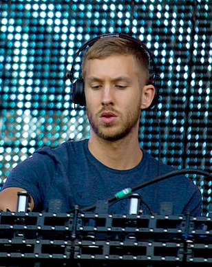

Calvin Harris
Adam Richard Wiles (born 17 January 1984), known professionally as Calvin Harris, is a Scottish DJ, record producer, singer, and songwriter. His debut studio album I Created Disco was released in June 2007; it spawned two UK top 10 singles, "Acceptable in the 80s" and "The Girls". In 2009, Harris released his second studio album, Ready for the Weekend, which debuted at number one on the UK Albums Chart and was later certified gold by the BPI. Its lead single, "I'm Not Alone", became his first song to top the UK Singles Chart.
Born in Dumfries, Scotland, Harris rose to international prominence with the release of his third studio album, 18 Months, in October 2012. Topping the UK charts, the album became his first to chart on the Billboard 200 chart in the United States, peaking at number 19. All eight of the album's singles, including "Feel So Close", "Sweet Nothing" and "I Need Your Love", reached the top 10 in the UK. At the time, Harris broke the record for the most top 10 songs from one studio album on the UK Singles Chart with eight entries, surpassing Michael Jackson. Harris released his fourth studio album, Motion, in November 2014.
...Harris has collaborated with numerous other recording artists. His collaboration with Rihanna "We Found Love" became an international success, giving Harris his first number one single on the US Billboard Hot 100 chart. In October 2014, he became the first artist to place three songs simultaneously on the top 10 of Billboard's Dance/Electronic Songs chart.[6] He also became the first British solo artist to reach more than one billion streams on Spotify.[7] Harris has received ten Brit Award nominations—three for Best British Male and four Grammy nominations, winning a Grammy for Best Music Video in 2013. He received the British Academy's Ivor Novello Award for Songwriter of the Year in 2013 and at the 2015 Billboard Music Awards was named Top Dance/Electronic Artist.
One of the most successful musicians in contemporary British popular culture, Harris appeared on Debrett's 2017 list of the most influential people in the United Kingdom.[8] Additionally, Harris topped Forbes' list of the world's highest-paid DJs for five consecutive years from 2013 to 2017. Harris runs his own record label, Fly Eye Records.